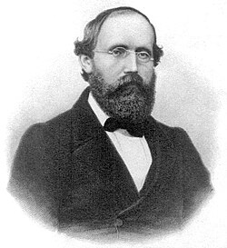

1826-1866
Bernhard Riemann

Portrait: unknown, Public domain, Wikimedia Commons.
Events (10)
- 1822Fourier series: from heat flow to analysis
developer · Functional & harmonic analysis
- 1829Abel's theorem and abelian integrals
developer · Algebraic geometry
- 1851Dirichlet's principle
developer · Complex analysis
- 1851Riemann surfaces
originator · Complex analysis
- 1859Riemann's zeta function and the prime number theorem
originator · Number theory
- 1868Riemannian geometry and manifolds
developer · Differential geometry
- 1870Betti numbers and early combinatorial topology
developer · Topology
- 1900Calculus of variations to Hilbert's direct methods
originator · Optimization & control
- 1900Riemann-Hilbert problem and monodromy
developer · Differential equations
- 1913Abstract Riemann surface (Weyl's manifold definition)
originator · Differential geometry